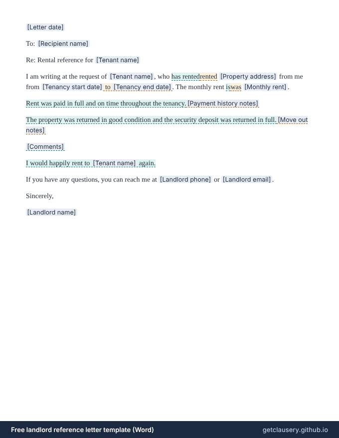

Landlord reference letter template — free, editable .docx
A rental reference letter from a landlord to a prospective landlord, confirming the tenancy dates and rent, whether rent was paid on time, how the property was left and whether the deposit was returned in full, with optional comments.

Free, with unlimited documents and no sign-up. Your answers stay in your browser. Who it is for: Landlords asked for a reference by a current or former tenant, and tenants who want to make it easy for their landlord to give one.
Updated · Word (.docx) · Free to use and adapt
Need more than one? Download all 87 templates as one .zip file.
What is in the landlord reference letter
- Recipient and tenant
- Property, tenancy dates and rent, for current or former tenants
- Payment history
- Condition at move-out and deposit returned
- Optional comments
- Would rent again
- Landlord contact details
Read the full template
This is the complete wording. [Labels] are filled in from your answers, and highlighted text only appears when it applies; hover over it to see when.
[Letter date]
To: [Recipient name]
Re: Rental reference for [Tenant name]
I am writing at the request of [Tenant name], who has rentedrented [Property address] from me from [Tenancy start date] to [Tenancy end date]. The monthly rent iswas [Monthly rent].
Rent was paid in full and on time throughout the tenancy.[Payment history notes]
The property was returned in good condition and the security deposit was returned in full.[Move out notes]
[Comments]
I would happily rent to [Tenant name] again.
If you have any questions, you can reach me at [Landlord phone] or [Landlord email].
Sincerely,
[Landlord name]
The questions you answer
Clausery turns the template into a short questionnaire. Optional parts only appear when they apply.
| Question | Type | Asked when |
|---|---|---|
| Letter date | Date | Always |
| Recipient name | Short text | Always |
| Tenant name | Short text | Always |
| Is current tenant | Yes / no | Always |
| Property address | Long text | Always |
| Tenancy start date | Date | Always |
| Tenancy end date | Date | If “Is current tenant” is no |
| Monthly rent | Money | Always |
| Paid on time | Yes / no | Always |
| Payment history notes | Long text | If “Paid on time” is no |
| Deposit returned in full | Yes / no | If “Is current tenant” is no |
| Move out notes | Long text | If “Is current tenant” is no and “Deposit returned in full” is no |
| Has comments | Yes / no | Always |
| Comments | Long text | If “Has comments” is yes |
| Would rent again | Yes / no | Always |
| Landlord phone | Phone | Always |
| Landlord email | Always | |
| Landlord name | Short text | Always |
Prefer to start from your own wording? Download the Word file, edit it, keep the {tags}, and upload it to Clausery. See the template syntax.
Questions
What should a landlord reference letter say?
The tenancy dates, the rent, whether it was paid on time, how the property was kept and left, and whether you would rent to the person again. Stick to facts you can stand behind.
Do I have to give a tenant a reference?
Usually not, but if you do, it must be accurate. A short, factual letter is safer than a glowing one you cannot support.
Can I mention problems in a reference?
You can state facts, such as late payments, without speculation. If you would rather not comment, confirm only the dates and rent.
Guide: How to write a reference letter (with examples)
Related templates
Browse all 87 free templates by category
This template is a general sample and not legal advice. Laws vary by jurisdiction; have it reviewed before use.